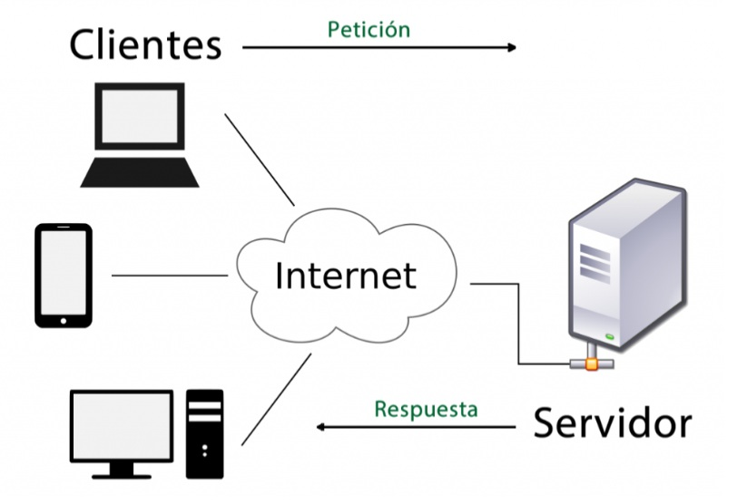

¿Qué es una URL?
Una URL, abreviatura de localizador uniforme de recursos, es una dirección web que apunta a un sitio web específico, una página web o un documento en Internet.

Pasos de lo que ocurre cuando ingresas una URL en el navegador:
-
Paso 1:
El usuario escribe una URL (https://www.microsoft.com/) en el navegador y le da a Enter. Lo primero que hay que hacer es traducir la URL a una dirección IP. El mapeo usualmente se guarda en una caché, así que el navegador busca la dirección IP en varias capas de caché: la caché del navegador, la caché del sistema operativo, la caché local y la caché del proveedor de internet (ISP). Si el navegador no encuentra el mapeo en la caché, le pide al resolvedor de DNS (Sistema de Nombres de Dominio) que lo resuelva.
-
Paso 2:
Si la dirección IP no se encuentra en ninguna de las cachés, el navegador va a los servidores DNS para hacer una búsqueda recursiva de DNS hasta que se encuentra la dirección IP.
-
Paso 3:
Ahora que tenemos la dirección IP del servidor, el navegador envía una solicitud HTTP al servidor. Para un acceso seguro a los recursos del servidor, siempre debemos usar HTTPS. Primero establece una conexión TCP con el servidor a través del handshake de 3 vías TCP. Luego envía la clave pública al cliente. El cliente usa la clave pública para encriptar la clave de sesión y la envía al servidor. El servidor usa la clave privada para desencriptar la clave de sesión. El cliente y el servidor ahora pueden intercambiar datos encriptados usando la clave de sesión.
-
Paso 4:
El servidor procesa la solicitud y devuelve la respuesta. Para una respuesta exitosa, el código de estado es 200. Hay 3 partes en la respuesta: HTML, CSS y Javascript. El navegador analiza HTML y genera el árbol DOM. También analiza CSS y genera el árbol CSSOM. Luego combina el árbol DOM y el árbol CSSOM para renderizar el árbol. El navegador renderiza el contenido y lo muestra al usuario.
Métodos GET y POST
Son métodos de envío de la información de los formularios válidos y ampliamente utilizados. Cada método tiene sus ventajas y sus inconvenientes y no se puede decir que uno sea mejor que otro. Elegir entre un método y otro depende de la aplicación concreta que se esté desarrollando y es algo que dentro de las empresas de desarrollos web suelen decidir los encargados del diseño de las aplicaciones.
| Método | Descripción | Cuándo se usa |
|---|---|---|
| GET | Lleva los datos de forma "visible" al cliente (navegador web). El medio de envío es la URL. Los datos los puede ver cualquiera. | Cada vez que se accede a un sitio web, se realiza un método GET. Este recupera datos del servidor. |
| POST | Consiste en datos "ocultos" enviados por un formulario cuyo método de envío es post. Es adecuado para formularios porque los datos no son visibles. | Se utiliza para enviar una entidad al recurso especificado. Por ejemplo, cuando se envía un formulario se suele utilizar el método POST. |

¿Cómo funciona la comunicación?
Cuando un navegador necesita un archivo que está almacenado en un servidor web, el navegador requerirá el archivo al servidor mediante el protocolo HTTP. Cuando la petición alcanza al servidor web correcto (hardware), el servidor HTTP (software) acepta la solicitud, encuentra el documento requerido y lo envía de regreso al navegador, también a través de HTTP. (Si el servidor no encuentra el documento requerido, devuelve una respuesta 404 en su lugar.)

Elementos semánticos

Al renderizar, el navegador usa estas etiquetas para entender la estructura:
- <article>: Define una pieza de contenido independiente. Se usa para artículos o entradas de blog.
- <header>: Define un encabezado para un documento o sección.
- <footer>: Define un pie de página para un documento o sección.
- <nav>: Define bloques de enlaces de navegación.
- <aside>: Define contenido aparte del cuerpo principal, como barras laterales.
- <main>: Define el contenido principal en la página. Solo debe haber uno.
- <section>: Define una sección temática. Debe llevar un título h2-h6.
- <figure>: Define contenido visual como fotos o diagramas.
- <h1> a <h6>: Definen los encabezados HTML por nivel de importancia.